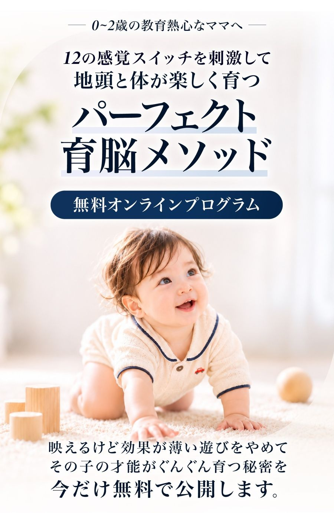
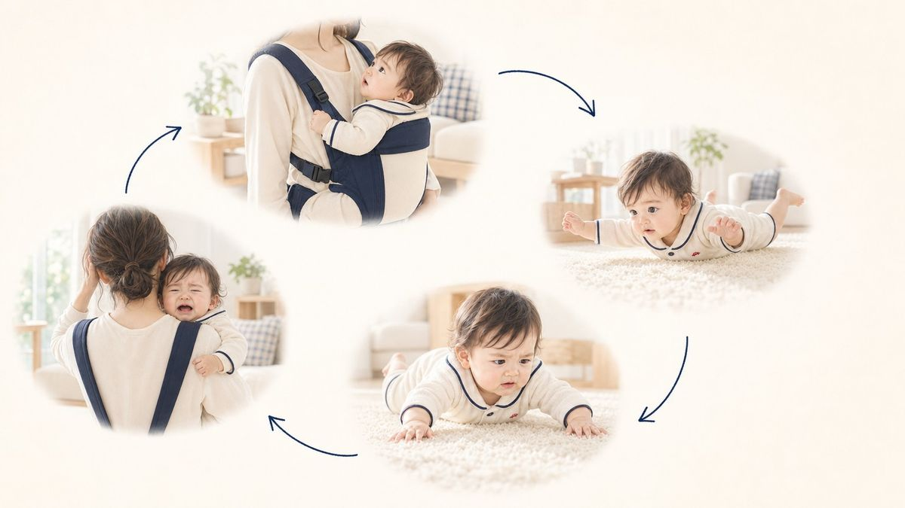
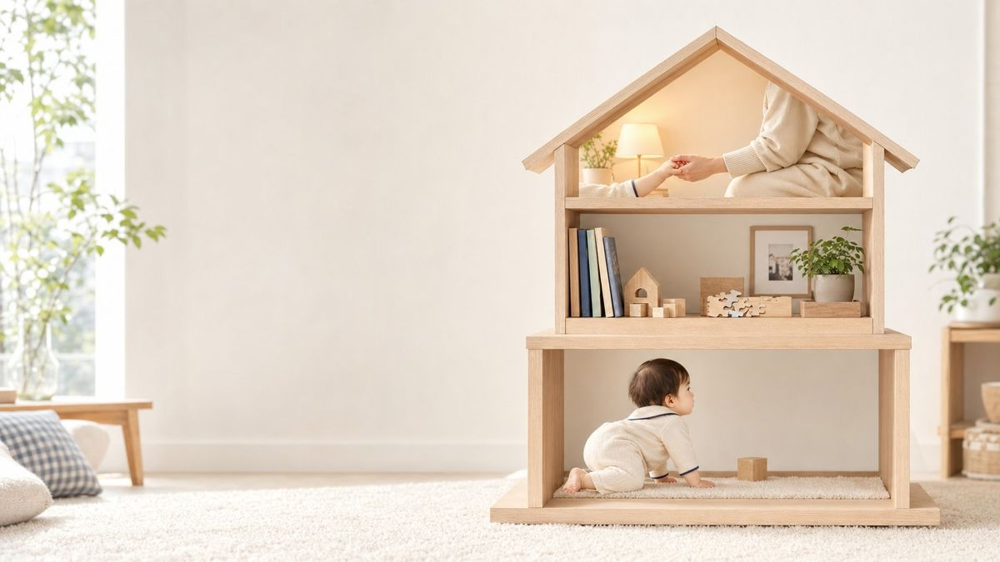
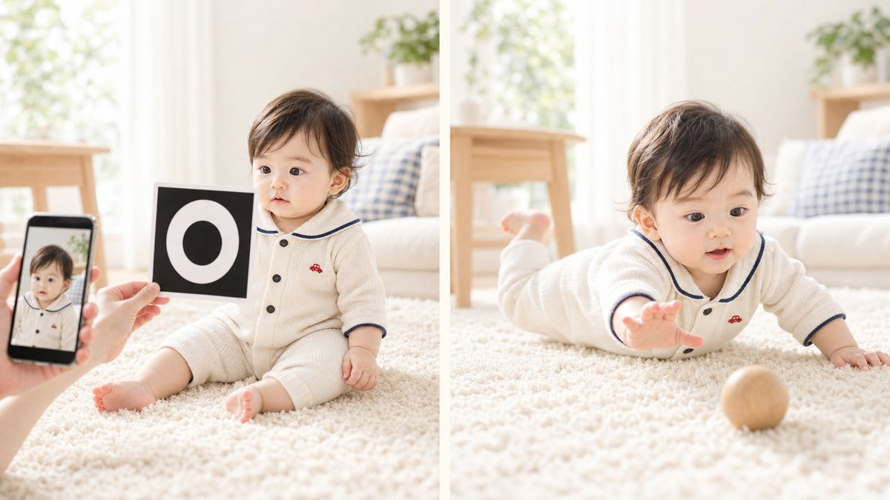
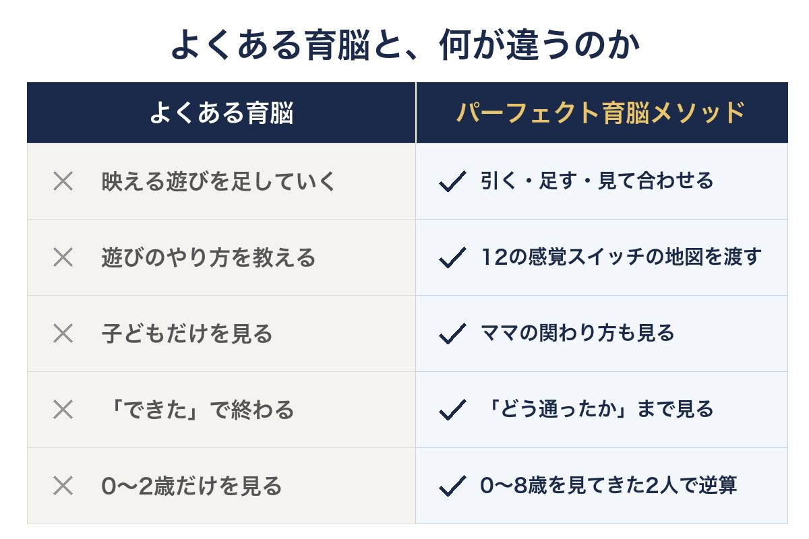
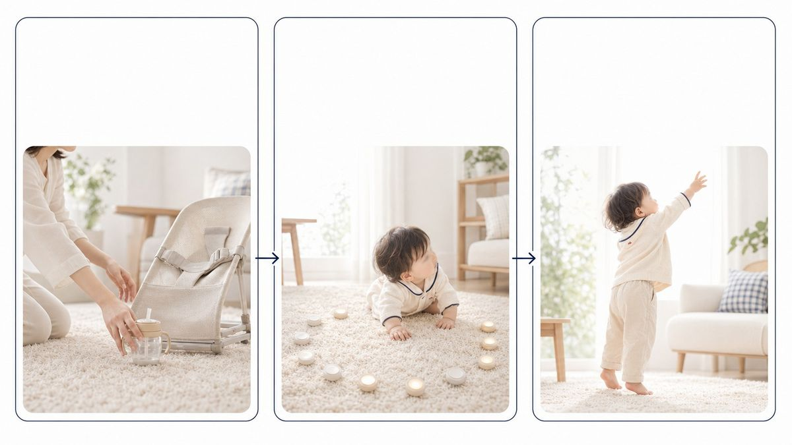
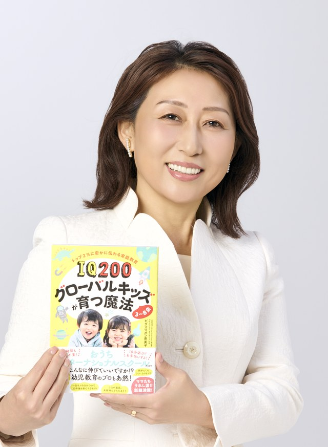
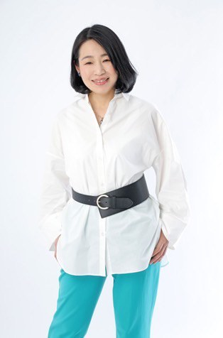
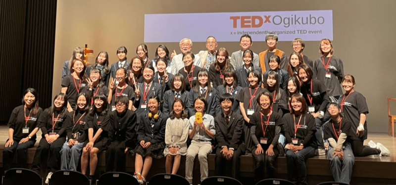
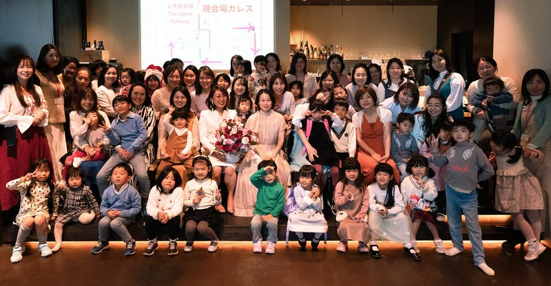

0〜2歳のお子さまを育てるママ向け
参加費無料 ご登録から3日間限定の公開約60分の動画を
無料でお届けします。
ご登録のあとのページで
LINEにもご登録ください。
メールとLINEで動画をお送りします。
日程を選ぶ必要はありません。
【スタッフ作業】この枠をUTAGEのフォームパーツに差し替えてください。
取得項目：お子さまの月齢（自由記入）／メールアドレス
登録後の遷移先：サンキューページ
※ご登録は無料です。動画はメールとLINEでお送りします。
※動画の公開はご登録から3日間です。配信はいつでも解除できます。
ひとつでも当てはまったママに、
知っていただきたいことがあります。
教育のためのストロー練習。生まれて早いうちから、抱っこ紐の中で長く過ごすこと。腰がすわる前に、ベビーチェアやママの膝の上に座らせること。寝てくれるから、喜ぶからと、バウンサーに乗せること。
どれも、愛情があって、よく調べているママほどやっていることです。でも、赤ちゃんの体から見ると、自分で通るはずだった道を、大人が先回りして通り過ぎてしまっていることがあるんです。

たとえば、矯正歯科の宮島先生は「6歳までは、ストローを使わないでほしい」と話しています。ストローで吸うと、ほっぺたが顎を内側に押し、外へ広がるはずの顎に逆向きの力がかかるからです。
抱っこ紐やバウンサーなどの道具は、使ってはいけない、という話ではありません。大事なのは、使い方と時間です。くわしくは、動画でお話しします。

医師で脳の研究者の成田奈緒子先生は、脳の育ちを3階建ての家にたとえています。1階は体と感覚を使う「からだの脳」、2階は考える・覚える「おりこうさんの脳」、3階は「こころの脳」。下から順番に積み上がり、1階が小さいまま2階に詰め込むと、家は崩れてしまいます。
そして、私たちが親子の現場で見てきて、いちばん大切にしているのが、この体の1階をつくる0〜2歳です。この時期に土台を大きくしておくと、その上に2階の脳がすっと乗って、正しく伸びていく。3歳からでもできることはありますが、土台ができている子は、その分だけ有利です。
0〜2歳は、あっという間に過ぎていきます。
出典：成田奈緒子『高学歴親という病』（講談社＋α新書）の考え方をもとに作図

カードを見せると、じっと見つめる。音の出るおもちゃで、ぱっと笑う。SNSで見る育脳遊びは、反応が大きくて、すごく育っているように見えます。
でも、ママが本当に目指したいのは、地頭が良くて、体もよく動いて、心も強い子のはず。そこを目指すなら、地味でも、着実に成長を促す遊びのほうがいいんです。

くわしくは、
動画の中でお話ししています。

パーフェクト育脳は、何かを足すことから始めません。まず、頑張りすぎて邪魔になっているお世話を一つ引く。そのうえで、12の感覚スイッチに一つずつ刺激を入れていきます。
12の感覚スイッチは、体の動き、触覚、呼吸と口、聞くこと、見ること、体の傾きや力加減、手、足、言葉、抱っことおんぶ、人とのやりとり、睡眠。赤ちゃんの育ちを12に分けたものです。月齢ごとの入れどきを一枚にした「成長ロードマップ」に照らして、わが子を見て、その子に合わせます。
スイッチが入った子は、自分から動いて、自分から試すようになります。だから、その子の才能がぐんぐん育ち、体も、心も、頭も、まとめて育っていきます。
約60分で、こんな内容をお話ししています。
わが子に合わせた一手を、
知りたいママへ
子どもと向き合うことが、
心から楽しくなりました
5歳・1歳のお子さんのママ
上の子はタブレット中心の生活から、おもちゃで遊ぶこと、体を動かすこと中心の生活に。パパも「そういうことか！」とつながって、自分から関わるようになりました。
子育ての迷いが、
格段に減りました
2歳のお子さんのママ
知識が伴うことで、子どもへ向ける注意の仕方が変わりました。主人に共有したら、子どもが散らかしていても、発達に必要なら一緒に楽しめるように。苦痛を感じる時間が、楽しい時間に変わりました。
検索して不安になる時間が、
なくなりました
3歳のお子さんのママ
困りごとをすぐに相談できることで、1人目よりも自分自身に余裕を感じられました。子どものやることがただのイタズラではなく、全てに意味のある行動だと分かりました。
下の子のためだけでなく、
上の子にも役に立つことばかり
1歳のお子さんのママ
上の子の「お口ポカン」に悩んで受講しました。上の子に「やめなさい！」と言うことが減り、何の刺激が足りていないのかな、と考えられるようになりました。理論的な説明なので、主人に伝えるとすぐに納得して実践してくれました。
3か月はかかると言われていたのが、
3日目には効果が出てきました
5歳・2歳のお子さんのママ
朝起きて私が横にいないと泣き、思うようにいかないと泣く。それを一日中くり返す5歳の娘に悩んでいました。娘は反りが強く、首すわり前に寝返りをしていて、いつも緊張状態にあったのだと納得できました。個別面談で教わった関わり方で、泣く回数が減り、待てるように。「娘も、しんどかっただろうなと思います」。
「なんで？」と、
むやみに悩まなくなりました
講座を修了したママ
今この時期なんだなあ、と分かりながら子育てをすると、「これはいいのだろうか？」とむやみに悩まなくなり、より子供を尊重できるようになりました！
ピグマリオン恵美子は、東京で16年間英語スクールを運営し、1万組以上の親子と向き合ってきました。3〜8歳の子どもたちのためのメソッドは『IQ200グローバルキッズが育つ魔法』として本になりました。
本を出したあと、全国のママから同じ質問をたくさんいただきました。「妊娠中からできることはないですか」「2歳より前にできることはないですか」。3歳から先で、姿勢がすぐ崩れる、集中が続かない、すぐにあきらめる、といった姿を見るたびに、その手前の0〜2歳が気になっていたのです。
そこで、0〜2歳をお願いしたいと思ったのが、渋谷で0〜3歳の親子向け発達あそび教室を開き、1,500人以上の親子と関わってきた早惠子先生です。3歳から先で何が起きるかを見てきた代表と、0〜2歳の体を見てきた講師。この2人だから、0〜2歳を逆算してお伝えできます。

IQ・EQ200式 ホームインターメソッド主宰
一般社団法人 Global Kids' Mom 代表理事
ピグマリオン恵美子
東京・吉祥寺にて16年間英語スクールを経営。「入会待ち」が続く教室運営の傍ら、のべ1万人以上の親子を指導してきた「現場の教育家」です。
自身も3児の母。3〜8歳の子どもたちのためのメソッドは、大手出版社・三笠書房より書籍化されました。TEDx登壇実績あり。3歳から先で子どもたちに何が起きるかを見てきたからこそ、その土台をつくる0〜2歳に取り組んでいます。

幼児教育コンサルタント
親子カウンセラー＆あそびの専門家
吉田早惠子
子育て支援歴16年。お子さまの発達や遊びを、「できる・できない」だけでなく、その子らしい育ちとして見ていく視点を、やさしく丁寧にお伝えしています。


| 運営会社 | 一般社団法人 Global Kids' Mom |
|---|---|
| 代表理事 | ピグマリオン恵美子 |
| 主な事業内容 | オンラインスクール事業 リアルスクール事業（東京・吉祥寺） 福祉事業（児童発達支援施設） イベント・講演事業（TEDx主催等） |
| 企業理念 | その子らしく個性や才能を伸ばして、これからの時代に一人一人が輝ける社会を実現する。 |
授乳や寝かしつけの合間に、決まった時間に参加し続けるのは大変です。そこで、いちばん大事なことを約60分の動画1本にまとめました。途中で止めて、何回かに分けてご覧いただけます。
赤ちゃんの育ちは、同じ月齢でも一人ひとり違います。動画の最後に、ママの関わり方を見える形にする「ベビママ発達診断」と、講師と一緒にわが子の今を見ていく個別説明会のご案内があります。
子どもへの最高のプレゼントを、
いちばん大きく渡せるのは今です